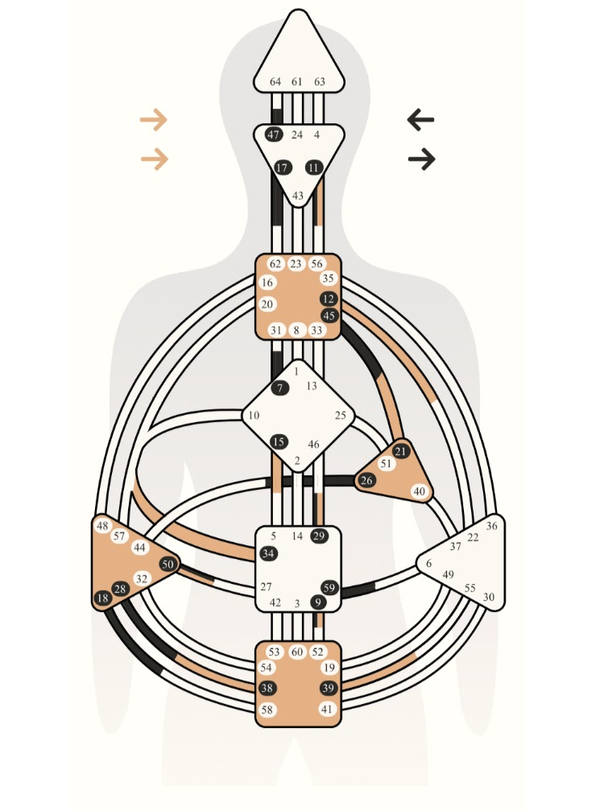
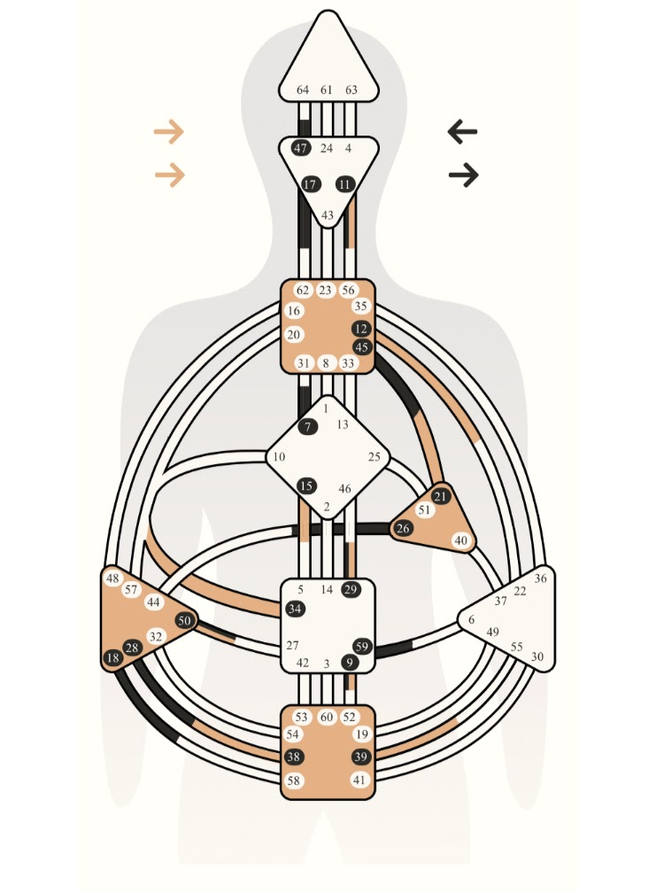

Hi, my name is Burnette Nguyen-Emerson. I previously lived in the Bay Area, CA. I was a city girl through and through. I enjoyed exploring different places, trying a variety of global cuisines, mingling with diversity, and had access to a smorgasbord of experiences at my fingertips. Then I met my husband in CA, fell in love, and we decided to move in 2015 to his hometown: Nixa, MO.

We bought our very own house in Nixa. It was an initial culture shock living in an area with a smaller population density, where neighbors know each other, and where there is big emphasis on community.

My husband and I have since created a beautiful sanctuary for ourselves the last 5 years, along with joining a wonderful community. During our spare time, we enjoy gardening in our large backyard garden. We also became new beekeepers this year to a healthy colony. I also enjoy personal development - specifically Human Design and energy work. I do personal Human Design readings for people to bring more clarity to their life's work and purpose.
 

I'm not sure where or what I'll be doing after this course. I hope to be able to use my newfound knowledge and skills to create sacred online spaces to help people and improve the world in some capacity.